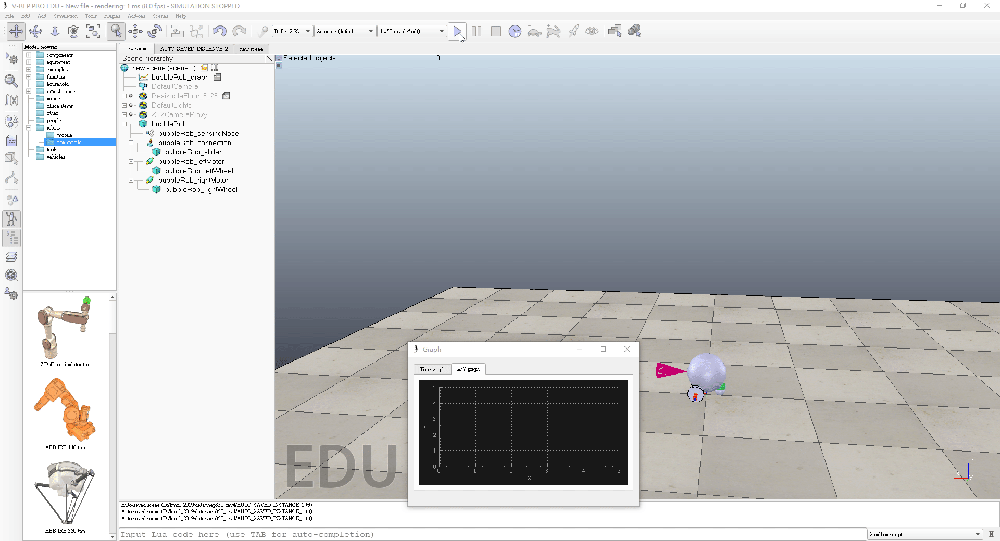

40623206
week1
用了很久的可攜式系統在這學期要自己創建，體驗如何製作一個可攜式系統，跟著老師的步驟做，一步一步的去拼湊它，才發現它需要下載很多程式，再慢慢的連結各項功能，建立出屬於自己的開發環境，使它可以幫助自己完成這學期的工作
week2
由於228連假，把課補到第一週上完。在第一週快下課前沒有做完的東西把它補好，以便下個禮拜能跟上老師的進度
week3
在這週學到如何利用程式亂數分組以及ungit，在不熟的情況下如何把東西成功的展現出來，不知道自己的組員有誰，好幾次執行之後，以為這次就會確定組員，但結論是到下週才知道結果，每一次的執行都讓人覺得刺激
week4
經過緊張又刺激的分組後，已經確定組員，由於之前都是老師已經把網站架設好讓我們使用，這次是網站要自己弄出來，在一個空的倉儲裡如何建立網站，一開始有點不知道怎麼下手，理解之後才發現其實不難
week5
這週分配工作，確定每個組員要做的事情，我被分配到的工作是畫圖，由於上學期對Onshape不熟，所以先用Inventor畫出他的樣子再慢慢修改，原本因為美觀把底版加長，詢問老師之後才知道網站上的手足球平面圖是比賽規格，不能更動，所以直接用Onshape重畫一個
week6
在用Onshape繪製的過程中，遇到了一點問，詢問同學之後才知道，繪製零件時，如果同時擠出分開的實體，內建會自動分成多實體，最後在用Boolean的Union把所有實體合併在一起。組合每個零件時也遇到一些問題，花了一點時間去研究，摸索他的功能，才發現Onshape的組合比Inventor好用。組裝過程中，為了避免桿子在移動時，整個超出手足球的側板，我約束了他的前後移動範圍，也測試桿子會不會太短導致撞到側板，終於把手足球完成了
week7
清明連假
week8
這週上課做了BubbleRob tutorial，因為還不熟悉裡面的功能，邊看邊做的時候常常因為找不到而一直請教同學功能在那裡，一開始做總是比較難，希望之後能順利的完成後面的東西

在模擬的過程中少了一些步驟，導致我的東西只會往後走

重做一個才發現其實自己少了很多步驟，終於把它成功完成了

week9
期中打自評成績，並報告第一週到第八週所作內容
week10
這週我開始模擬新的tutorial，也找不太到這個的重點，做了前面的一些些，原本一直失敗，後來才發現功能都是分開的，彼此之間沒有關聯，一開始以為可以直接在V-rep叫零件，可能可以只是還沒找到，所以在Onshape畫一個類似的零組件去模擬，希望後面可以把它完成
40623203 << Previous Next >> 40623211